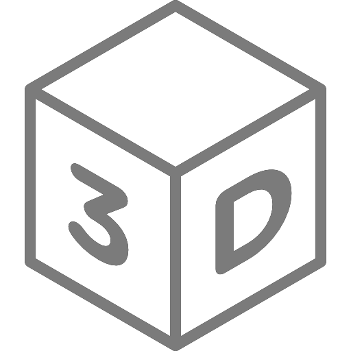
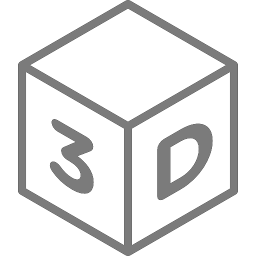

Hi, user! I'm Wall-E, you may already know me. I'm here to help you navigate this site. Let's start!
Click the "Play" button to start the animation, and hover over the planets to see more information.
Hi, user! I'm Wall-E, you may already know me. I'm here to help you navigate this site. Let's start!
Click the "Play" button to start the animation, and hover over the planets to see more information.
 


Earth
The Earth is the third planet from the Sun, the densest and largest of the terrestrial planets (Mercury, Venus, Mars). It is the only body in the Universe known to man that is inhabited by living organisms. The Earth was formed about 4.54 billion years ago, and soon it acquired a natural satellite, the Moon.
Life is believed to have originated on Earth about 4.25 billion years ago. The biosphere changed the atmosphere, created the ozone layer, which, together with the magnetic field, protects the Earth from solar radiation. 70.8% of the surface is occupied by the World Ocean, and the rest is continents and islands. Water, necessary for life, exists only on Earth.
The Earth has an active internal structure: a mantle, a liquid outer core, and a solid inner core. The planet interacts with other objects in space, including the Moon and the Sun. The Earth revolves around the Sun in 365.26 days, the tilt of the axis of rotation of 23.44° causes the change of seasons. The Moon stabilizes the axis and causes the tides.
Humanity has divided the Earth into 193 UN member states and several other political entities.
Moon
The Moon is the only natural satellite of the Earth. It is the closest satellite of the planet to the Sun, since the closest planets to the Sun (Mercury and Venus) do not have satellites. The second brightest object in the Earth's sky after the Sun and the fifth largest natural satellite of a planet in the Solar System. The average distance between the centers of the Earth and the Moon is 384,467 km (0.00257 AU, ~30 Earth diameters)
The Moon appeared about 4.5 billion years ago, a little later than the Earth. The most popular hypothesis is that the Moon was formed from fragments left after the "Giant Collision" between the Earth and Theia, a planet similar in size to Mars.
To date, the Moon is the only extraterrestrial astronomical object that has been visited by humans.
Asteroid (101955) Bennu
(101955) Bennu (Latin: Bennu; originally — 1999 RQ36) is a small near-Earth asteroid from the Apollo group. It was discovered as part of the LINEAR asteroid search project at the Socorro Observatory and on April 25, 2013, it was named in honor of the ancient Egyptian deity — the Bennu bird, a symbol of the resurrection of Osiris.
According to the results of the initial calculations for 100 years ahead, the chances of a collision with Earth were very small. A group of scientists led by Oscar Arratia from the University of Valladolid made repeated, more accurate calculations, taking into account, among other things, the Yarkovsky effect. According to their data, the probability of an asteroid falling on Earth is 1/4000, and the date of a possible fall is between 2169 and 2199. When falling to Earth, its speed will be 12.86 km / s. NASA called this asteroid the most potentially dangerous object for Earth.
Asteroid (29075) 1950 DA
Asteroid (29075) 1950 DA is a near-Earth asteroid from the Apollo group, crossing the orbits of Earth and Mars. It was discovered on February 22, 1950 by astronomer Karl Wirtanen at the Lick Observatory. At the moment, it is considered one of the most dangerous asteroids for Earth. The probability of its collision with Earth on March 16, 2880 is 1 in 300, but this is most likely due to observational errors. In the event of an impact, the consequences will be catastrophic, with changes in the biosphere and climate of the planet.

Mercury
Mercury is the smallest planet in the Solar System and the closest to the Sun. It is named after the Roman god Mercury, as it moves across the sky faster than any other planet. Its orbital period around the Sun is 87.97 Earth days, the shortest among the planets.
Mercury never moves more than 28° away from the Sun, so it is only visible during twilight. Like Venus and the Moon, it shows phases, with a period of about 116 days.
Its axial tilt is the smallest of all the planets, but its orbit is the most elongated. At perihelion, its distance from the Sun is 66% of the distance at aphelion. The surface is covered with craters, similar to the Moon, indicating no geological activity in recent billions of years. Temperatures range from −173 °C at night to +427 °C during the day, while the polar regions remain cold. Mercury has no moons.
It was explored by the Mariner 10 spacecraft in 1974–1975 and MESSENGER in 2008–2015. In 2025, the BepiColombo mission is scheduled to arrive at Mercury.

Mercury
Mercury is the smallest planet in the Solar System and the closest to the Sun. It is named after the Roman god Mercury, as it moves across the sky faster than any other planet. Its orbital period around the Sun is 87.97 Earth days, the shortest among the planets.
Mercury never moves more than 28° away from the Sun, so it is only visible during twilight. Like Venus and the Moon, it shows phases, with a period of about 116 days.
Its axial tilt is the smallest of all the planets, but its orbit is the most elongated. At perihelion, its distance from the Sun is 66% of the distance at aphelion. The surface is covered with craters, similar to the Moon, indicating no geological activity in recent billions of years. Temperatures range from −173 °C at night to +427 °C during the day, while the polar regions remain cold. Mercury has no moons.
It was explored by the Mariner 10 spacecraft in 1974–1975 and MESSENGER in 2008–2015. In 2025, the BepiColombo mission is scheduled to arrive at Mercury.